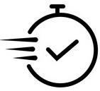

Headlights are typically made of polycarbonate plastic, which can be affected by UV rays, environmental factors, and oxidation. This causes the headlights to become cloudy or yellowed over time.

MOBILE CAR HEADLIGHT RESTORATION SERVICE IN CENTRAL LONDON
-

We are here to present high quality service and allow our work to exceed all expectations of professionalism and integrity
-

We provide fast and friendly mobile service because we know your time is expensive
-
Our company works only with high-quality products used by big brand companies.

About us
Headlights Forever is professional and cost-effective car headlight restoration in Central London. Our expert team is dedicated to restoring the clarity and appearance of your headlights, ensuring optimal visibility and safety on the roads. Using premium quality chemicals, we offer the fastest and most efficient method to get your headlights looking like brand new for ages.
Why Choose Headlights Forever headlight restorer?
- Cost-Effective: Restoring your headlights with us is a cost-effective alternative to replacement. Our services are affordable, allowing you to save money while enhancing the appearance and safety of your vehicle.
- Mobile Service: We offer a convenient mobile service, covering various areas in London: Our team can come to your location, saving you time and hassle.
- Expertise: Our experienced specialists are skilled in restoring headlights to their original condition. We utilize advanced techniques and industry-leading tools to deliver exceptional results.
- Personalized Solutions: We understand that each car's headlights are unique. Our restoration process is tailored to your specific requirements, ensuring a customized approach for optimal results.
- Professional-Grade Products: We use high-quality professional-grade chemical products designed specifically for headlight restoration. These products effectively remove oxidation, discoloration, and haze, restoring clarity and brightness to your headlights.
- Maintenance Advice: We provide valuable advice on future headlight maintenance to help you keep your headlights in optimal condition for longer.
6 Advantages Restoring Your Car Headlights
Safety First
Your safety on the road is our top priority. By restoring your headlights, we ensure optimal visibility, reducing the risk of accidents and improving overall driving safety, especially during nightime travel
Revive to Perfection
Say goodbye to cloudy, oxidized, and yellowed headlights. Our advanced restoration techniques bring back the glory of your old headlights, transforming them into their original pristine condition. Enjoy a refreshed appearance that enhances the overall aesthetics of your vehicle
Long-Lasting Results
Extend the lifespan of your headlights with our professional restoration service. We address common issues such as fading and degradation, preserving the quality and functionality of your headlights for years to come
Value Enhancement
Well-maintained and clear headlights contribute to the overall value of your car. Whether you’re selling your vehicle or simply want to enjoy a pristine look, our restoration service maximizes its resale value and curb appeal
Cost-Effective Solution
Say goodbye to hefty expenses associated with headlight replacement. Our restoration service offers a cost-effective alternative, saving you money without compromising on quality. Restore your headlights to their former glory and enjoy the benefits of clear, bright illumination without breaking the bank
MOT Compliance Assurance
Ensure your car passes its MOT test with flying colors. Cloudy or deteriorated headlights can lead to MOT failure. By restoring your headlights, you eliminate the possibility of MOT failure, saving you the inconvenience and expense of retesting
Our happy customers after headlight restoration
FAQ
Our restoration process is designed to provide long-lasting results. When headlights are restored by our team and receive proper maintenance, they can maintain their brand-new appearance for up to 4 years. Our restoration method, combined with regular care, ensures that your headlights stay clear, bright, and aesthetically pleasing for an extended period.
Headlight restoration is not a permanent solution, as headlights will eventually degrade over time due to environmental factors and UV exposure. However, regular maintenance and proper care can help prolong the results of the restoration.
It all depends on the shape, and how damaged the headlights are. Generally, it is around 30 to 90 minutes.
Professional services typically cost between £65 to £120. Check your price using our calculator.
Yes, headlight restoration can help diminish the appearance of minor scratches on headlights. However, deep or severe scratches may require additional repair methods or even headlight replacement.